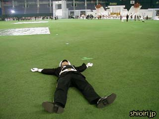

|
ホームページ
|
サイトマップ
|
ご意見・ご感想
|
ラッパのリハーサルがなかなか始まりません。ドームの雰囲気を楽しむことにしましょう。
カメラマン席の電話機。幾度となくファウルボールに直撃を受けているようです。

人工芝の上に寝そべってみました。本物の芝生に近い感触です。
こんな高い天井、初めて見ました。
横を向いてみましょう。
細かい砂も混じっているので、歩き続けると靴の中に砂が入ってしまいます。
≪前のページ
次のページ≫
SHIOIRI Tomohiro <webmaster@shioiri.com>